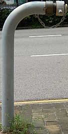
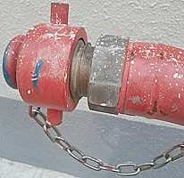
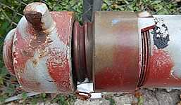
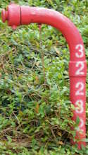
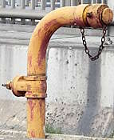
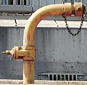

Water Supplies Department (HKSAR Government), originally on Y2015-M05-D22, revised on Y2021-M02-D03 | Water Supplies Department Standard Drawings 1.55A: Swan Neck Fire Hydrant and Cap (Type II) | https://www.wsd.gov.hk/filemanager/en/content_1599/WSD0155-A.pdf
Water Authority (British Hong Kong), on Y1959-M08-D26 | Memo 354 (in HKRS287-1-691 Pedestal Fire Hydrant, Kowloon - Installation of New Hydrant) | Public Records Office, Government Records Service (HKSAR Government)
The Water Supplies Department released the standard drawings of Swan Neck on their website. Look for WSD 1.55 - Swan Neck Fire Hydrant and Cap (Type II). You can check it out if you are interested in the technical specifications of a Swan Neck hydrant.
This type should not be confused with Double Head Swan Neck, which looks very different from a normal Swan Neck.
Okay, so Swan Necks painted in red use fresh water and those painted in yellow use seawater, anything else that is noteworthy?
Swan Necks painted primer grey
I managed to find three Swan Necks painted in primer grey since their installation during the pandemic - at least four years ago. They are all unnumbered, and only the one on 82B Waterloo Road shows up in GeoInfo Map.
an unnumbered primer grey Swan Neck
Victoria Road near Kennedy Town Jockey Club Clinic
Photo taken in Y2026-M07

an unnumbered primer grey Swan Neck
82B Waterloo Rd
Photo taken in Y2026-M06
red Round Head 27069 and an unnumbered primer grey Swan Neck
Waterloo Road opposite of Pitt Street
Photo taken in Y2026-M07
Swan Neck cap connector
While most Swan Necks I've seen have the cap connector shown in WSD 1.55 (which I will refer to as the "standard cap connector"), I found two Swan Necks with a different cap connector, which has a more angular shape. I will also provide photos of Swan Necks with the standard connector for comparison.

close-up of an unnumbered red Swan Neck's non-standard cap connector
Canton Road between Argyle Street and Nam Tau Street
Photo taken in Y2026-M04
an unnumbered yellow Swan Neck with non-standard cap connector
Pitt Street at Waterloo Road
Photo taken in Y2026-M06

close-up of red Swan Neck 15095's standard cap connector
Tai Tam Reservoir Road between Hong Kong International School and Tai Tam Scout Centre
Photo taken in Y2026-M03
yellow Swan Neck 15048 with standard cap connector
Cadogan Street at Catchick Street
Photo taken in Y2026-M07
Swan Necks that are not a single pipe
WSD 1.55 describes the Swan Neck as a "stainless steel pipe", and indeed most Swan Necks I've seen are just "a single pipe". But like with many things, there are exceptions. So far, I found six Swan Necks made of joining the curved and straight sections. The two section design is actually shown in another Water Supplies Department standard drawings: WSD 1.34 about hydrant painting, in which a white band would be painted on the joint section if the Swan Neck is connected to a trunk main. But WSD 1.34 is not a standard drawing specifically about Swan Neck and the joint might just be an exagerated representation of where the white band was to be painted. There is also a weird variant of the two-section Swan Neck on Tsing Tsuen Road bridge, the joint section of which is actually a valve (but without the handwheel). If you check the Swan Neck with valve on Google Maps street view, it was mostly red with hints of yellow beneath the red in Y2009-M04, but most of the red had weathered away and it looks yellow again by Y2026-M05.
flyover linking Hong Chong Road to Chatham Road North, near bridge structure K18
Photo taken in Y2026-M07

red Swan Neck 32232 (previously 63)
South Lantau Road at Silver Centre Building
Photo taken in Y2026-M09


an unnumbered yellow (?) two-section Swan Neck with the joint section being a valve
Tsing Tsuen Road bridge
Photos taken in Y2026-M05 and M06
The funny front profile of Swan Neck
This is not really anything extraordinary but I think it is worth appreciating just how low profile Swan Necks are when viewed from the front. After all, a Swan Neck is just a "stainless steel pipe".
front view of red Swan Neck 25523 (previously 737)
Fung Shue Wo Road @ Tsing Yi Rural Committee
Photo taken in Y2026-M07
front view of an unnumbered yellow Swan Neck
Factory Street @ Mong Lung Street
Photo taken in Y2026-M08
front view of an unnumbered primer grey Swan Neck
Victoria Road near Kennedy Town Jockey Club Clinic
There is a Swan Neck-like hydrant outside Lutheran Theological Seminary. More details about the wacky custom hydrants at Lutheran Theological Seminary in this page.
an unnumbered black custom hydrant that looks like a Swan Neck
50 To Fung Shan Road at the entrance of Lutheran Theological Seminary
Photo taken in Y2026-M04
Swan Necks are historic
The earliest mention of Swan Necks I was able to find was in a 1959 memo, in which Swan Necks were proposed to replace the Ground Hydrants installed in San Hui Market (Ground Hydrant was a type which I believe is no longer found in Hong Kong except in Chek Lap Kok airport). While it is not clear if the Swan Necks mentioned in the 1959 memo was the same Swan Neck design we know and love (or I guess not, because people online rarely talks about Swan Necks), I think it is fair to say that the Swan Neck design (or I suppose the concept of a single outlet hydrant) have been around for 67 years. So yes, even though people online always talk about how the "Octagonal hydrant" is historic, Swan Neck is equally if not more historic. As for Heavy Draw-off Hydrants, they didn't exist in 1959 so Swan Neck is more historic!